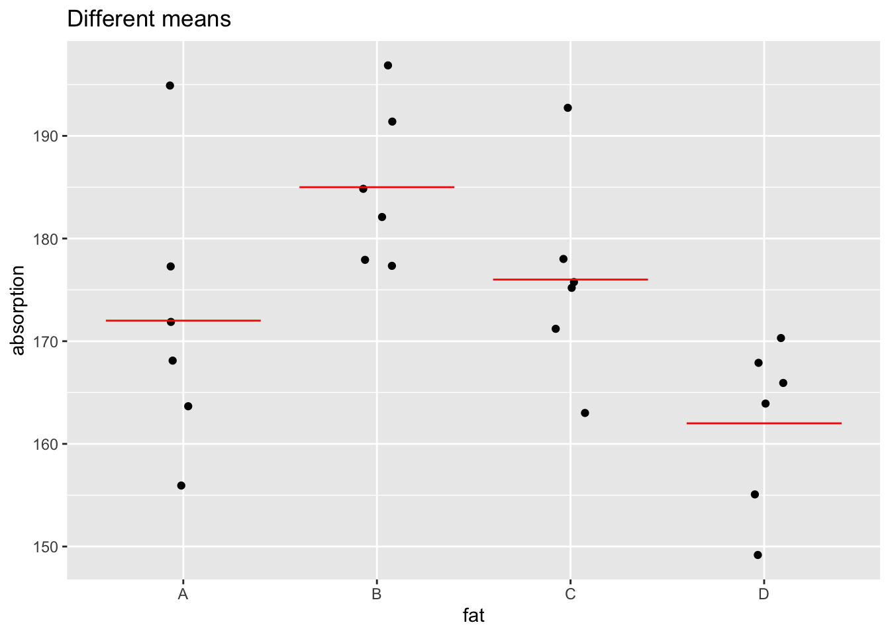

17 More on R
17.1 Repetition
Although R has many functions which can perform high-level operations from a single call, it is also a full-blooded programming environment. All the standard programming concepts and control mechanisms are available and these are introduced in this chapter.
For those who may be interested, R also has the tools required for functional and object-oriented programming, although these are not covered here.
Those who are experienced programmers in other languages may find that R is at the more permissive end of the spectrum, for example in the nature of the parameters which are passed to functions. This does give substantial flexibility but some may find that this runs counter to their training in more formal programming languages.
17.1.1 Standard loops
As a motivating example, suppose we are interested in extremes such as the highest sea level or wind speed in a month or a year. Some progress can be made on this by studying the statistical theory. However, we can also use simulation to help us understand what is going on.
Suppose we are observing a phenomenon where individual daily measurements might reasonably be expected to follow a normal distribution with mean 10 and standard deviation 2. What will the maximum measurement over week, month or year look like?
Let’s start with a week. The rnorm function generates random values from a normal distribution.

With only 7 observations the histogram is highly variable. Let’s move to a month.
The max function makes the largest value easy to find.
## [1] 14.6698The concept of a for loop makes releated simulations easy to produce. Here the dummy variable i runs through the range from 1 to nsim and for each value of i a set of data is simulated and the maximum found.
nsim <- 100
mx <- rep(0, nsim)
for (i in 1:nsim) mx[i] <- max(rnorm(30, mean = 10, sd = 2))
hist(mx)
We can obtain a clearer picture of the distribution by increasing the number of simulations.
nsim <- 1000
mx <- rep(0, nsim)
for (i in 1:nsim) mx[i] <- max(rnorm(30, mean = 10, sd = 2))
hist(mx)The for construction provides a clear and simple method of looping but it can be very inefficient. Much more efficient methds are available in the apply family of functions.
17.1.2 The ‘apply’ family
A for loop is a standard means of repeating an operation, but in R this can be a very inefficient way of proceeding. This is because R is an interpreted language and so there are overheads associated with repeated operations. A good solution is to make use of R functions which are constructed to deal with repeated operations more efficiently. The apply family of functions offers this.
The example below shows how this works. We first generate the entire set of simulated data, covering all nsim sets of 30 observations. This is stored in a matrix with 30 columns. When the apply function is called, it executes the nominated function (max) on each row (specified as dimension 1) of the matrix (x). This creates nsim maxima and these are stored in the object mx.
The difference in execution time in this example is small but in more complex problems the time saved can be considerable. This sometimes has to be balanced against the storage required to set up the object to which apply will be applied.
There are various other forms of apply which are designed to handle more complex objects such as lists or data indexed by a factor. See the help function on apply (and its friends) for more details.
17.2 Writing your own functions
Once we have a useful block of code, which we may wish to use repeatedly and in different circumstances, it can be very useful to turn this into a new function. This is done simply by assigning a name to a function which consists of this block of code. The value of the last instruction in the function is returned as the value of the function. The invisible function is useful to avoid this being printed out.
sim.max <- function() {
nsim <- 100
x <- rnorm(nsim * 30, mean = 10, sd = 2)
mat <- matrix(x, ncol = 30)
mx <- apply(mat, 1, max)
hist(mx)
invisible(mx)
}The function can then be activated (or called) simply by typing its name in the usual way.
To provide detailed control of the function we can add arguments. These have stated default values but we can override these by specifying (or passing) different values.
17.3 Conditional statements and while loops
There is often a need to control the execution of statements through logical expression. For example, suppose in the wind speed context we want to limit the upper wind speeds we consider because we are modelling the power output of wind turbines and at very high speeds these have to be switched off to prevent damage. Let’s suppose the threshold for this is \(50\) mph. Let’s also consider a lognormal model for wind speed, so that the log speed is normal with mean \(2\) and standard deviation \(1\).
How should we amend our code to implement this? Here is a possibility.
First we amend the arguments of the sim.max function to signal that the mean and standard deviation refer to the log scale. We also add the threshold argument as it is likely that we will want the option to change this.
Now we have to change the way the data are simulated. Here we have done this one observation at a time, inspecting whether each one is below the threshold or not. Notice that samp is set up as an empty vector by numeric(0). The while construction means that we generate more data only is the samp vector does not yet have enough observations.
If that’s the case then we simulate a value from a lognormal distribution (see the help file for rlnorm) and add it to samp using the c function if it lies below the threshold. (The if construction also has the possibility of a following else statement but that’s not needed here.)
The rest of the function follows as before.
There are usually many ways of coding any task. The example below is not the most elegant or efficient. It’s primary aim is to illustrate the while and if constructions.
sim.max <- function(n = 30, mn.log = 2, s.log = 1, threshold = 50, nsim = 1000) {
mx <- rep(0, nsim)
for (i in 1:nsim) {
samp <- numeric(0)
while (length(samp) < n) {
value <- rlnorm(1, mn.log, s.log)
if (value < threshold) samp <- c(samp, value)
}
mx[i] <- max(samp)
}
hist(mx)
invisible(mx)
}
sim.max()17.4 Further reading
Markdown is a simple formatting syntax for authoring HTML, PDF, and MS Word documents. R Markdown allows Markdown documents to be created with embedded R code which runs when the document is compiled. R Studio makes the creation of R Markdown documents very straightforward.
This is a very powerful way of working. In particular it promotes reproducible research thrugh the creation of a single document which embodies and reports on a statistical analysis.
For more details on using R Markdown see http://rmarkdown.rstudio.com.
A simple way to begin experimenting with the system is to use the menu item
File > New File > R Markdown
to place a template R Markdown file in the editor window. This can be compiled by clicking on the Knit button.
You might like to go back to the very first example of the session, to create a document which weaves a commentary around the R code, to create an integrated report.
The Markdown Quick Reference material available from the Help menu in RStudio provides a very helpful summary of the key instructions.
Packages provide a very efficient means of extending the facilities of R and making these extensions available to others. Writing a package can be a rewarding enterprise, although it does take some effort to do well. Wickham and Bryan (2023) provide an excellent guide on the details of doing this.
17.5 Exercises
17.5.1 A simple function
With a sample of data on a continuous scale, it can be useful to plot a histogram and then superimpose a normal density function to assess the suitability of the normal model. For the purpose of the exercise, we can simply simulate some random data using the rnorm function.
In plotting the histogram, it will help to use the additional probability argument in the hist function so that the histogram is scaled to have area 1. To superimpose the normal density, we can define a grid of values along the horizontal axis and then compute the values of the normal density function there, using dnorm. The normal density curve can then be drawn simply by connecting these positions with lines, using the lines function. The code below does this.
xgrid <- seq(min(x), max(x), length = 100)
ygrid <- dnorm(xgrid)
hist(x, probability = TRUE)
lines(xgrid, ygrid, lwd = 2, col = "blue")- Turn the code into a function, with a name of your choosing, with a single argument
x, the data to be plotted. As the code above assumes the mean and standard deviation of the normal density to be 0 and 1 respectively, amend the code to draw a density function whose mean and standard deviation match the sample mean and sample standard deviation of the data. [Themeanandsdfunctions will be helpful here, as will themeanandsdarguments of thednormfunction.] Test the function out with data of your choice (or simulated data). - Add arguments to the function to allow the user to control the colour and line width of the plotted normal density function.
- Amend the code of the histogram and normal density example above to ensure that (a) the density curve is never truncated because its peak is higher than the highest histogram bar and (b) that the normal density always stretches out to at least +/-3 sd’s. [*This task is a little trickier. Notice that if you set the argument
plot = FALSEin an initial call tohistand store the result then you can get information on the height and spread of the bars, among other things.]
A possible analysis
A possible analysis
17.5.2 A simple function: thresholds
Write a function which accepts a vector and a single numeric value as input and which then calculates how many elements of the vector exceed the threshold set by the given numerical value. Apply this function to demographic data across the world to calculate the number of countries whose population exceeds 50 million. Code to read and collate UN data is available at the end of Section 4.1. If you prefer, a simpler option is to use the gapminder data, available in the gapminder package.
Plot this pattern over time.
A possible analysis
17.5.3 Improving the sim.max function
Consider how you might improve the coding of the sim.max function. Here are two possibilities.
Generate a full set
nobservations from the lognormal distribution. Now remove those observations which do not lie below the threshold. This can be used as a good starting point for thesampvector, rather than starting from nothing.Amend the code within the while loop to generate as many observations from the lognormal function which are needed, again removing those which do not lie above the threshold. This should greatly reduce the number of loops required.
A possible analysis